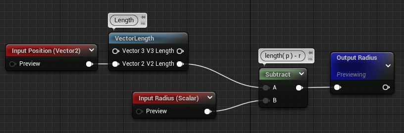

Porting IQ 2D SDF Shadertoys to Unreal - Part 4
We've spent the last 3 articles putting in place an environment which will allow us to quickly iterate on IQ's Shadertoy and write the SDF functions we want in a way that's easy to debug and understand.
If you didn't follow from the start, we're going to start from this UI material blueprint :
Setup
Today the goal is going to build up a library of SDF functions that we'll be able to reuse. There's two big categories of functions we'll be implementing :
- The shapes, those take the position input and output distances from the shape : circle, rectangles, triangles
- Operations, those take at least 2 distances and combine them to output a new shape, union, intersection and difference are good examples
To encapsulate all that we're going to use Material Functions, those seems to be the right way to build reusable building blocks in Unreal material system. We actually already used a bunch ! A lot of nodes are actually material functions built from simpler nodes ! If you go back to the SDF material you can double click on VectorLength for example and see what's inside.
We can see that VectorLength is actually just using a distance node to computes the distance between our input and the origin.
Alright ! So let's setup an SDFFunctions folder and create a Circle function material.
If you look at the details panel, we'll want to set a small description, the category so it's easier to find, and the thumbnail to Plane (although as you'll see the preview isn't that useful).
Now we can copy the circle computation in our SDF graph into this new material :
And finally replaced the invalid reroute and the radius with FunctionInput nodes, this will automatically add pins to your function node. Don't forget to set proper name to the nodes !
You'll also need to set the input type to Vector2 and Scalar for the position and radius input respectively (see the details panel).
Finally rewire everything and we're good to go ! Our circle node is ready :

Plop that node back into our original graph and yay â•°(°▽°)╯ ! The SDF computation looks much more readable !
Moving Forward
Alright ! We now have a good workflow to develop our functions, we can write them in the main graph, and once we're satisfied with the result, create a material function node for them that'll allow us to reuse them whenever we want.
The next step now is to through Inigo Quilez's shape list and implement the ones we'd like to use ! I won't do all of them but I'll go through the ones I find interesting, feel free to try it out ! The math isn't that crazy for most of them, but it does get tedious to make them into materials sometimes.
Rounded Box
This is a very standard shape for UI drawings, the rounded box !
https://www.shadertoy.com/view/4llXD7
There's four parts of the math here that we can split up neatly, I've commented the code so we can get some clear goals :
1 2 3 4 5 6 7 8 9 10 11 12 13 14 15 | |
There's no new nodes we haven't seen before so I'm just going to show the resulting graphs, starting with computing the corner radius !
Then we get Q:
And finally, the actual box and corner distance :

You can find the pastebin of this material here, blueprintue doesn't seem to be handling named reroutes correctly, but if you paste it back into unreal you'll the the correct names.
Let's plug our new node back into our SDF graph and appreciate the result !
Looks pretty nice ! Inigo is actually animating the radius and size, let's try to reproduce that. The magic happens in this part of the shadertoy :
1 2 3 | |
We can use a Time node to represent the iTime variable !
And after plugging si and ra back into our rounded rect node :
And that's it ! We've got our first non-circle (and animated !) shape \(￣︶￣*\))
Oriented Box
This one is interesting as it involves matrix transformations, we'll see if unreal has some nodes to help us with that.
1 2 3 4 5 6 7 8 9 | |
I'm going to skip the math and focus on the matrix multiply as the rest is nothing we haven't done before, you can try doing it yourself and check back at the end, I'll paste the full material as usual.
1 | |
This is building a rotation matrix using [d.x, d.y] coefficients and rotates q by that matrix. I'll get to how we can build such a matrix from just an angle later, but first we have to figure out how to do the matrix-vector multiplication in the Unreal material system.
There's actually a function node that already does that in 3 dimensions :
So we're going to do the transform in 3 dimensions, assuming we're at Z = 0, and then we'll only take the [X, Y] components of the result. In GLSL this is equivalent to :
1 2 | |
To noodelify, we have 4 things to do :
- Expand q to a vec3
- Build the BasisX vector as [d.x, -d.y, 0]
- Build the BasisY vector as [d.y, d.x, 0]
- Component mask the result as a vec2
Let's get to it !
Using a bunch of Append and ComponentMask nodes, we get our basis and q :
Q is straightforward, for the basis the idea is to cut d into d.x, d.y. Compute -d.y and swizzle everything into the 2 vectors we need.
We can finally component mask the matrix output to get the X/Y components and feed that to the rest :
Finishing writing all the nodes we get this blueprint, which is pretty big, so I won't cut it up in screenshot for my sanity :p. You can check the pastebin here :
The OrientedBox function has 3 parameters, the screen position as usual, the extreme points of our rect, and the width.
This says "Put a box going from [-0.25, 0.75] to [0.25, 0] with a width of 0.25", and the result :
Funnily enough this node can also be used to draw lines by supplying a width of 0 !

Tada ヾ(•ω•`)o, but how did I combined two lines though 🤔. I actually used a Union operation ! We'll implement those in the next part :D
Conclusion
Aight ! We've seen some basic shapes, we can now draw circles, boxes, oriented boxes and even lines ! It's a nice starting toolset to do some stuff, but before we're truly free we'll need to implement a bunch of operations. We'll see the main ones in the next part !